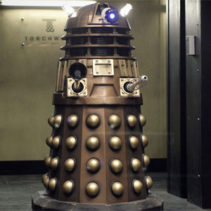

| Daleks |
| Cybermen |
| The Master |
| Lady Cassandra |
| Davros |
| Weeping Angel |
Dalek
Portrayed by Raymond Cusick.
The Daleks are a fictional extraterrestrial race of mutants principally portrayed in the British science fiction television programme Doctor Who. The Daleks were conceived by science-fiction writer Terry Nation and first appeared in the 1963 Doctor Who serial The Daleks, in the shells designed by Raymond Cusick.
Within the programme narrative, Daleks are cyborgs created by the scientist Davros during the final years of a thousand-year war against the Thals. He genetically modified a race of extraterrestrials, known as the Kaleds from the planet Skaro, and integrated them within a tank-like, robotic, mechanical shell. His final modification was to remove their ability to feel pity, compassion or remorse. The Daleks soon came to view themselves as the supreme race in the universe and began a conquest of universal domination and extermination. Various storylines portray them as having had every emotion removed except hate, leaving them with a desire to purge the Universe of all non-Dalek life. Collectively they are the greatest enemies of the series' protagonist, the Time Lord known as the Doctor. During a conflict with the Time Lords, the Daleks were almost completely killed off. This took place off-screen between the 1996 television movie and the 2005 revived series, and was a plot point in several episodes. They are popularly known for their catchphrase "Exterminate!" and are a well-recognised reference in British popular culture. They have appeared in 97 episodes as of April 2013.
In July 2013, the BBC announced that the Daleks will return alongside the Zygons in the 50th anniversary special "The Day of the Doctor".
The Daleks were created by writer Terry Nation and designed by BBC designer Raymond Cusick.[2] They were introduced in December 1963 in the second Doctor Who serial, colloquially known as The Daleks.[3] They became an immediate and huge hit with viewers, featuring in many subsequent serials and two 1960s motion pictures. They have become as synonymous with Doctor Who as the Doctor himself, and their behaviour and catchphrases are now part of British popular culture. "Hiding behind the sofa whenever the Daleks appear" has been cited as an element of British cultural identity;[4] and a 2008 survey indicated that nine out of 10 British children were able to identify a Dalek correctly.[5] In 1999 a Dalek appeared on a postage stamp celebrating British popular culture, photographed by Lord Snowdon.[6] In 2010, readers of science fiction magazine SFX voted the Dalek as the all-time greatest monster, beating out competition including Japanese movie monster Godzilla and J. R. R. Tolkien's Gollum, of The Lord of the Rings.